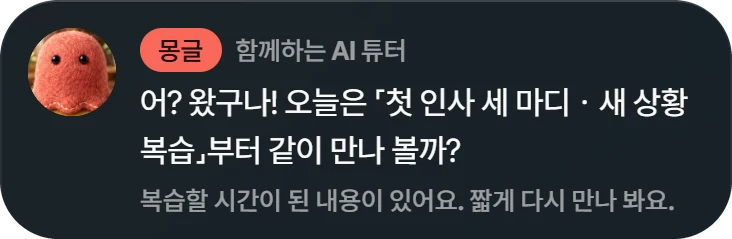

SYNK WORLD · 직접 풀어 보기
한 문제만 풀어 보세요 30일을 빨리 감아 드립니다


일주일 만에 다시 꺼낼 말
- 지금
- 1분 뒤
- 내일
- 7일 뒤
- 30일 뒤
- 내 위치
실제 첫 레슨의 문제와 SYNK WORLD 화면 · 예시 학습자의 30일
synk.im/lab · 「쓸수록 달라지는 것」 구역 · 시안 2026-11-18
사진을 모두 뺐습니다. 대신 교실 창으로 들어온 빛 한 덩어리가 벽에 놓이고, 그 빛이 날마다 달라집니다. 첫날은 늦은 오후의 낮은 해, 다음 날은 아침빛, 7일 뒤는 비 오는 날, 30일 뒤는 해 질 녘 첫눈입니다. 비와 눈은 그 빛 안에서만 그림자로 지나갑니다.
SYNK WORLD · 직접 풀어 보기

일주일 만에 다시 꺼낼 말
실제 첫 레슨의 문제와 SYNK WORLD 화면 · 예시 학습자의 30일